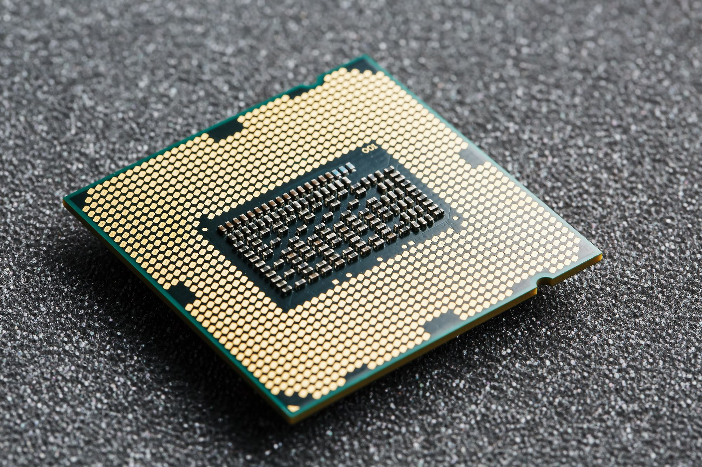
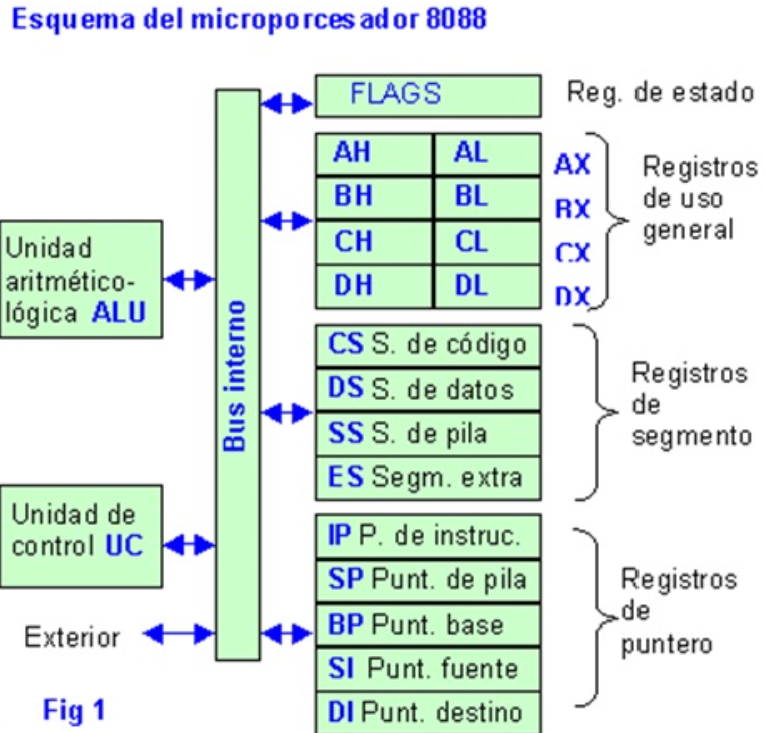
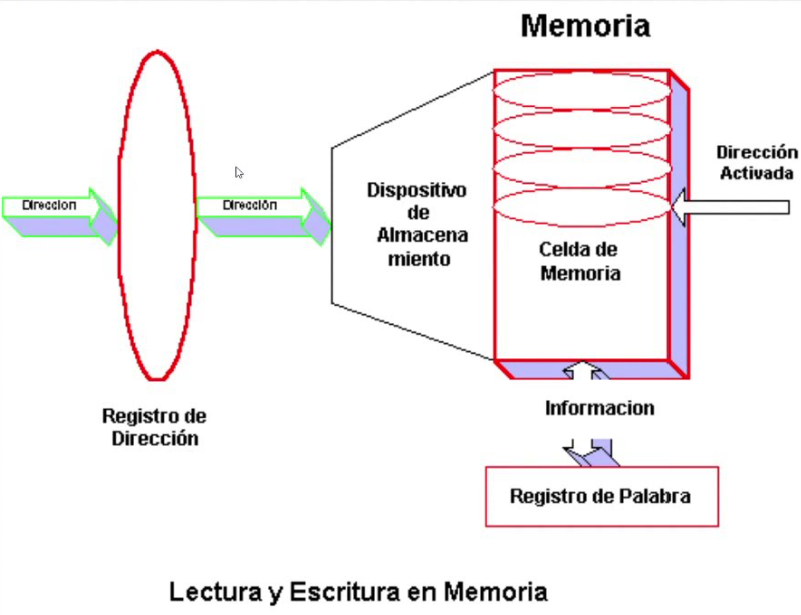
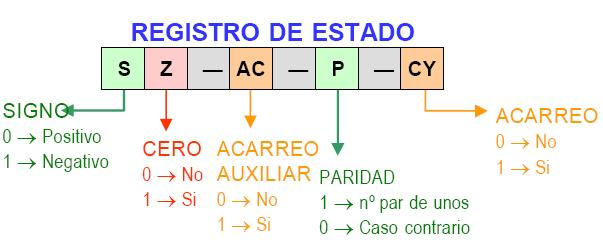
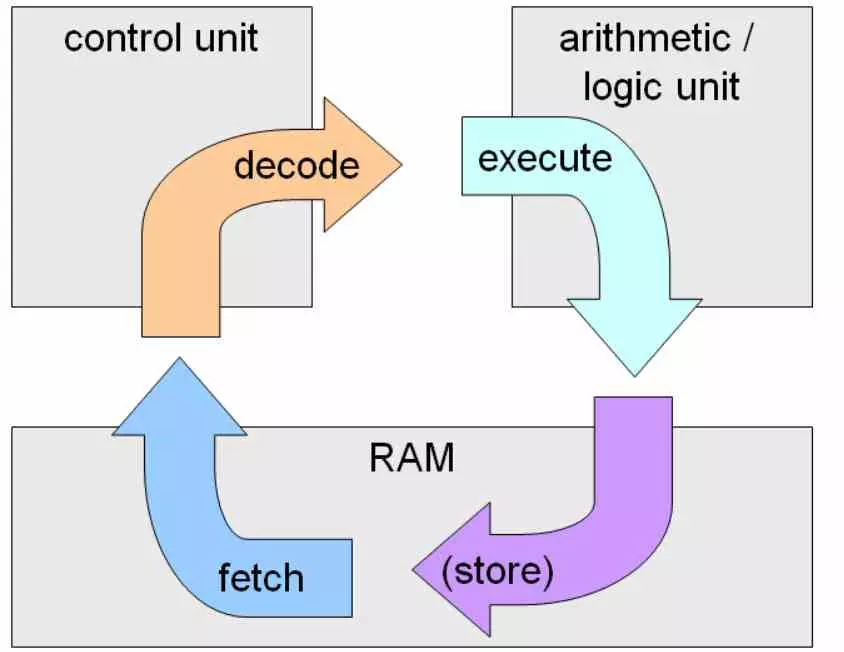
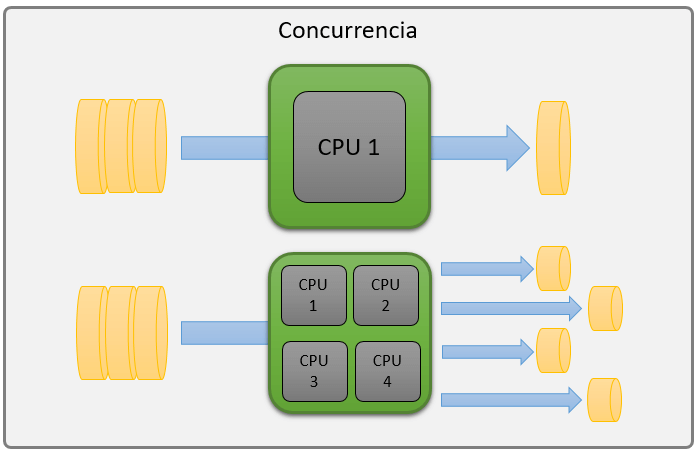

2.1 Organización del procesador.
Un procesador, también conocido como unidad central de procesamiento (CPU), es el componente principal de un
sistema informático que ejecuta instrucciones y procesa datos. La organización del procesador se estructura
en varias unidades funcionales clave que trabajan juntas para llevar a cabo sus tareas. Estas incluyen la
unidad de control, que interpreta las instrucciones del programa y las convierte en señales de control para
otras partes del procesador; la unidad aritmético-lógica (ALU), que realiza operaciones matemáticas y
lógicas; y los registros, que son pequeñas áreas de almacenamiento interno utilizadas para operaciones
rápidas. Además, los procesadores modernos suelen incluir una unidad de punto flotante para operaciones
matemáticas complejas y un conjunto de cachés para acelerar el acceso a datos e instrucciones frecuentemente
utilizados.
El diseño del procesador también se basa en arquitecturas que determinan cómo se manejan las instrucciones y
los datos. Por ejemplo, la arquitectura de conjunto de instrucciones (ISA) define las operaciones que el
procesador puede realizar, mientras que la microarquitectura describe cómo se implementan estas
instrucciones en hardware. Las técnicas de paralelismo, como la ejecución fuera de orden y la predicción de
bifurcaciones, se utilizan para mejorar la eficiencia y el rendimiento, permitiendo que múltiples
instrucciones se procesen simultáneamente. Además, la segmentación (pipelining) divide la ejecución de
instrucciones en etapas más pequeñas, permitiendo que diferentes instrucciones se procesen en diferentes
etapas al mismo tiempo. Estas características y técnicas, combinadas con avances en la tecnología de
semiconductores, permiten a los procesadores modernos alcanzar altas velocidades y niveles de rendimiento.

2.2 Estructura de registros.
La estructura de registros en un procesador incluye varios tipos de registros, cada uno con funciones
específicas. Los registros de propósito general (GPR) son utilizados para una variedad de tareas como
almacenar operandos para operaciones aritméticas y lógicas. En arquitecturas x86, ejemplos de estos
registros son EAX, EBX, ECX, y en arquitecturas x86-64 se extienden a RAX, RBX, RCX. Los registros de
propósito especial incluyen el contador de programa (PC), el puntero de pila (SP), y el registro de
estado/banderas (FLAGS), que son esenciales para el control del flujo de ejecución y la gestión del estado
del procesador.
Además, existen registros de segmento en arquitecturas como x86, que gestionan la segmentación de la
memoria, como CS (Code Segment) y DS (Data Segment). Los registros de punto flotante y los registros
vectoriales/SIMD son usados para operaciones de números decimales y operaciones paralelas, respectivamente,
siendo ejemplos los registros ST(0) a ST(7) para el coprocesador x87 y los registros XMM y YMM para
extensiones SSE y AVX. Estos registros permiten al procesador realizar cálculos complejos de manera
eficiente.
Finalmente, los registros de control y estado, como CR0 a CR4 en x86, controlan diversas funciones del
procesador y mantienen el estado de operaciones críticas. La arquitectura de registros también incluye
registros de depuración y otros de propósito especial para tareas específicas, como los registros de índice
y puntero base. Estos diferentes tipos de registros trabajan juntos para permitir al procesador ejecutar
instrucciones y gestionar datos de manera rápida y eficiente, siendo cruciales para la programación de bajo
nivel y la optimización del rendimiento del sistema.
- Registros de Propósito General (GPR - General Purpose Registers)
- Registros de Propósito Especial
- Registros de Segmento (en arquitecturas como x86)
- Registros de Punto Flotante
- Registros Vectoriales y SIMD
- Registros de Control y Estado
- Registros de Segmento (Segment Registers)
- Registros de Propósito Especial (Special-Purpose Registers)
- Registros de Propósito General (General-Purpose Registers)
- Registros de Punto Flotante (Floating-Point Registers)

2.2.1 Registros visibles para el usuario.
Los registros visibles para el usuario, también conocidos como registros de propósito general (GPR) y
registros especiales, son aquellos que los programadores pueden utilizar directamente en sus códigos para
realizar operaciones. En la arquitectura x86, estos incluyen registros como EAX, EBX, ECX y EDX, que se
utilizan para almacenar datos temporales y operandos para operaciones aritméticas y lógicas. En sistemas de
64 bits, estos registros se extienden a RAX, RBX, RCX y RDX. Además, están los registros de propósito
especial como el contador de programa (PC) que guarda la dirección de la siguiente instrucción a ejecutar, y
el puntero de pila (SP) que señala la posición actual en la pila.
Otros registros visibles para el usuario incluyen los registros de segmento en arquitecturas x86, como CS
(Code Segment) y DS (Data Segment), que gestionan la segmentación de memoria. Los registros de punto
flotante y los registros vectoriales/SIMD, como los registros XMM y YMM en extensiones SSE y AVX, también
son accesibles para el usuario y se utilizan para operaciones complejas en punto flotante y procesamiento
paralelo. Estos registros permiten a los programadores optimizar el rendimiento del software, aprovechando
las capacidades del hardware para realizar cálculos y manipular datos de manera eficiente.

2.2.2 Registros de control y de estados.
Los registros de control y estado en un procesador, como los CR0 a CR4 en la arquitectura x86, son
esenciales para gestionar diversas funciones internas y mantener el estado del sistema. Estos registros
controlan aspectos cruciales del funcionamiento del procesador, como la gestión de memoria, el modo de
operación (real, protegido, virtual), y el manejo de excepciones. Por ejemplo, CR0 contiene bits que
habilitan o deshabilitan ciertas características del procesador, como la protección de memoria y la
paginación. Además, el registro de estado, conocido como FLAGS o EFLAGS en x86, almacena indicadores de
condición que resultan de operaciones aritméticas y lógicas, como las banderas de cero, acarreo, signo y
desbordamiento, que son utilizados para tomar decisiones en el flujo de ejecución del programa.

2.2.3 Ejemplos de registros de CPU reales.
Arquitectura x86 (32 bits)
1- Registros de Propósito General (GPR)
- EAX: Acumulador para operaciones aritméticas y de entrada/salida.
- EBX: Registro base, a menudo utilizado para direcciones de memoria.
- ECX: Contador, utilizado en operaciones de bucle y desplazamiento.
- EDX: Extendido, utilizado en operaciones aritméticas y de entrada/salida.
2- Registros de Propósito Especial
- ESP (Stack Pointer): Apunta al tope de la pila.
- EBP (Base Pointer): Utilizado para referenciar la base del stack frame.
- EIP (Instruction Pointer): Contiene la dirección de la siguiente
instrucción a ejecutar.
- EFLAGS: Registro de estado que contiene banderas de condición.
3- Registros de Segmento
- CS (Code Segment): Segmento de código.
- DS (Data Segment): Segmento de datos.
- SS (Stack Segment): Segmento de pila.
- ES, FS, GS: Segmentos adicionales para datos.
Arquitectura x86-64 (64 bits)
1- Registros de Propósito General (GPR)
- RAX, RBX, RCX, RDX: Versión extendida de los registros EAX, EBX, ECX,
EDX.
- RSI, RDI: Utilizados para operaciones de índice fuente y destino.
- RBP, RSP: Base y puntero de pila extendidos.
- R8-R15: Registros adicionales introducidos en x86-64.
2- Registros de Propósito Especial
- RIP (Instruction Pointer): Contiene la dirección de la siguiente
instrucción a ejecutar.
- RFLAGS: Registro de estado extendido.
Arquitectura ARM
1- Registros de Propósito General (GPR)
- R0-R12: Utilizados para operaciones generales.
- R13 (SP): Stack Pointer, apunta al tope de la pila.
- R14 (LR): Link Register, almacena la dirección de retorno en llamadas a
funciones.
- R15 (PC): Program Counter, contiene la dirección de la siguiente
instrucción a ejecutar.
2- Registros de Estado
- CPSR (Current Program Status Register): Contiene banderas de condición y
bits de control.
- SPSR (Saved Program Status Register): Utilizado para guardar el estado
del programa en excepciones.

2.3 El ciclo de instrucción.
El ciclo de instrucción del procesador es el proceso fundamental mediante el cual la CPU ejecuta las
instrucciones de un programa, asegurando un funcionamiento ordenado y eficiente. Este ciclo consta de cuatro
etapas principales: Búsqueda (Fetch), donde la CPU obtiene la próxima instrucción desde la memoria;
Decodificación (Decode), donde interpreta la instrucción para entender las acciones necesarias; Ejecución
(Execute), donde realiza las operaciones especificadas como cálculos o accesos a memoria; y Escritura de
Resultados (Write Back), donde almacena los resultados de la operación en los registros o en la memoria.
Este ciclo es crucial para la coordinación y secuencia correcta de las instrucciones, optimizando el uso de
los recursos del procesador y manteniendo el orden lógico del programa. Además, maneja el control de flujo
del programa y la interacción con la memoria, detectando y gestionando errores en la ejecución de
instrucciones. En conjunto, el ciclo de instrucción permite que la CPU ejecute programas de manera fiable,
eficiente y rápida.
2.3.1 Ciclo Fetch-Decode-Execute.
1- Busqueda (Fetch)
- La CPU obtiene la instrucción desde la memoria a la que apunta el
contador de programa (PC) y la almacena en el registro de instrucciones.
2- Decodificacion (Decode)
- La CPU interpreta la instrucción, determinando qué acciones son
necesarias y qué operandos están involucrados
3- Ejecucion (Execute)
- La CPU realiza las operaciones necesarias, que pueden incluir operaciones
aritméticas, lógicas, acceso a memoria, o control de flujo.
4- Escritura de resultados
- Los resultados de la operación se escriben de vuelta en los registros o
la memoria. Este ciclo se repite continuamente mientras el procesador está en funcionamiento,
permitiendo la ejecución secuencial de las instrucciones de un programa.

2.3.2 Segmentación de instrucciones.
La segmentación de instrucciones, también conocida como "pipelining", es una técnica utilizada en los
procesadores para mejorar la eficiencia y velocidad de ejecución de las instrucciones. Consiste en dividir
el ciclo de instrucción en varias etapas consecutivas, permitiendo que múltiples instrucciones se procesen
simultáneamente en diferentes etapas del ciclo. Por ejemplo, mientras una instrucción está siendo
decodificada, otra puede estar siendo buscada, y otra más puede estar siendo ejecutada. Esta superposición
de operaciones maximiza el uso del hardware del procesador y reduce el tiempo total de ejecución de las
instrucciones.
La segmentación mejora significativamente el rendimiento del procesador, ya que cada parte del procesador
está constantemente ocupada con alguna etapa del ciclo de instrucción. Sin embargo, también introduce
complejidad en el diseño del procesador, ya que se deben manejar correctamente las dependencias de datos y
los posibles conflictos entre instrucciones que están siendo procesadas simultáneamente. A pesar de estos
desafíos, el pipelining es una técnica esencial en los procesadores modernos, permitiendo alcanzar mayores
velocidades de procesamiento y mejorando la eficiencia general del sistema.

2.3.3 Conjunto de
instrucciones, Caracteristicas y funciones.
El conjunto de instrucciones de un procesador, conocido como Instruction Set Architecture (ISA), es una
colección de comandos que la CPU puede ejecutar. Estas instrucciones incluyen operaciones aritméticas,
lógicas, de control de flujo, y de manipulación de datos. Características importantes del ISA incluyen su
complejidad (CISC o RISC), el formato de las instrucciones, el tamaño de los registros, y la cantidad de
modos de direccionamiento soportados. Un ISA bien diseñado permite un equilibrio entre simplicidad y
funcionalidad, facilitando la programación y optimización del software para el hardware subyacente.
Las funciones del conjunto de instrucciones son diversas y esenciales para el funcionamiento del procesador.
Permiten realizar operaciones matemáticas y lógicas, controlar el flujo de ejecución del programa mediante
saltos y ramas, manejar llamadas y retornos de funciones, y gestionar operaciones de entrada/salida y acceso
a memoria. Además, las instrucciones pueden interactuar con los registros del procesador y la memoria para
cargar y almacenar datos. La eficiencia y el rendimiento de un procesador dependen en gran medida del diseño
y la implementación del conjunto de instrucciones, que determina cómo el hardware ejecuta las tareas
programadas y cómo se optimiza el uso de recursos del sistema.
2.3.4 Modos de direccionamiento.
Los modos de direccionamiento en un procesador determinan cómo se especifican las direcciones de los
operandos en las instrucciones. Algunos modos comunes incluyen el direccionamiento inmediato, donde el
operando está directamente en la instrucción; direccionamiento directo o absoluto, donde la instrucción
contiene la dirección de memoria del operando; direccionamiento indirecto, donde la dirección de memoria del
operando se obtiene a partir de otra dirección almacenada en un registro; direccionamiento basado en
registros, donde el operando está en un registro específico; y direccionamiento relativo, donde la dirección
del operando se calcula a partir de un desplazamiento relativo a la posición actual del contador de programa
(PC). Cada modo ofrece diferentes ventajas en términos de flexibilidad, eficiencia y simplicidad en la
codificación de las instrucciones y acceso a los datos.
2.4 Casos de estudio de CPU reales.
Los modos de direccionamiento en CPUs reales, como las arquitecturas x86 y ARM, son variados y cruciales
para la flexibilidad y eficiencia de la ejecución de instrucciones. En x86, modos comunes incluyen el
direccionamiento inmediato, donde el operando es parte de la instrucción; direccionamiento directo, que usa
una dirección de memoria fija; direccionamiento indirecto, donde la dirección del operando se encuentra en
un registro; y direccionamiento basado en registros con desplazamiento, que combina un registro base y un
desplazamiento constante. La arquitectura ARM, además de estos, utiliza modos como direccionamiento relativo
al PC para calcular direcciones basadas en la posición actual del contador de programa, y direccionamiento
basado en índices, que permite operaciones sobre matrices y estructuras de datos complejas. Estos modos
permiten a los procesadores manejar eficientemente una amplia gama de operaciones y acceder rápidamente a
datos y instrucciones en memoria.